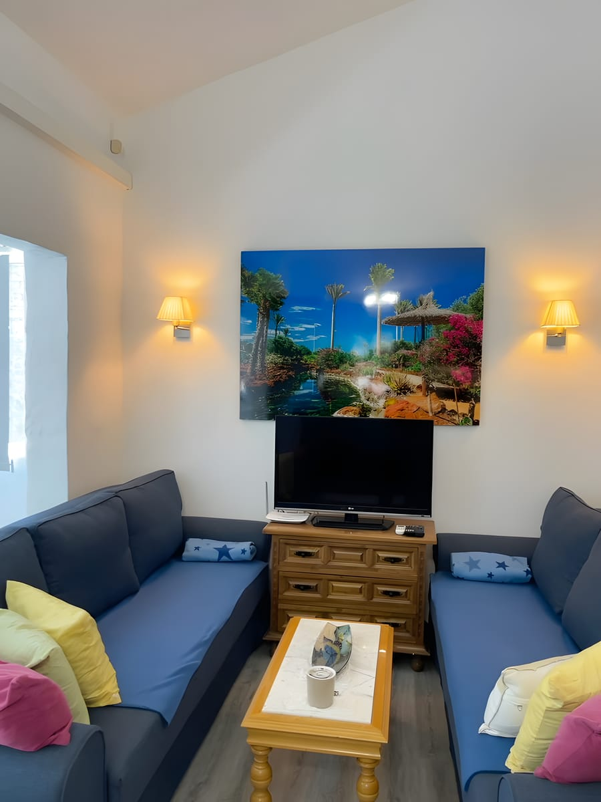
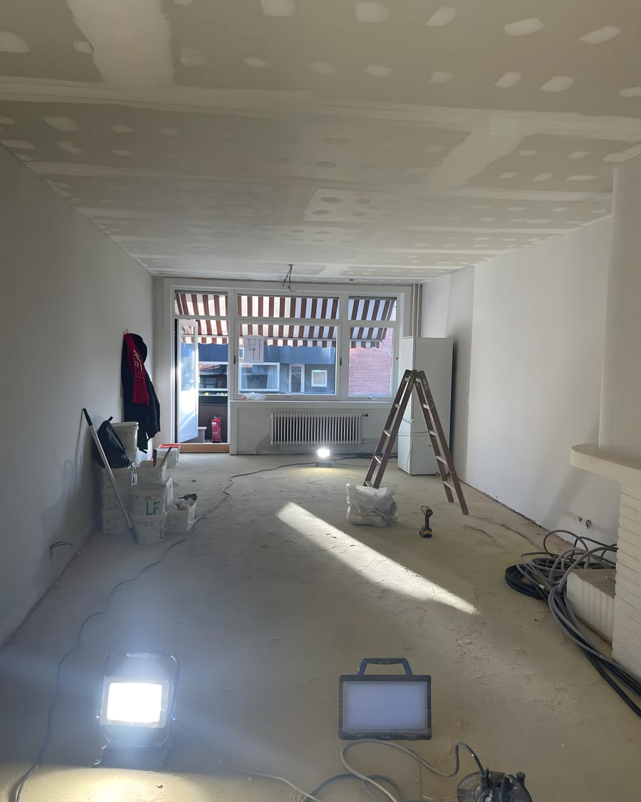
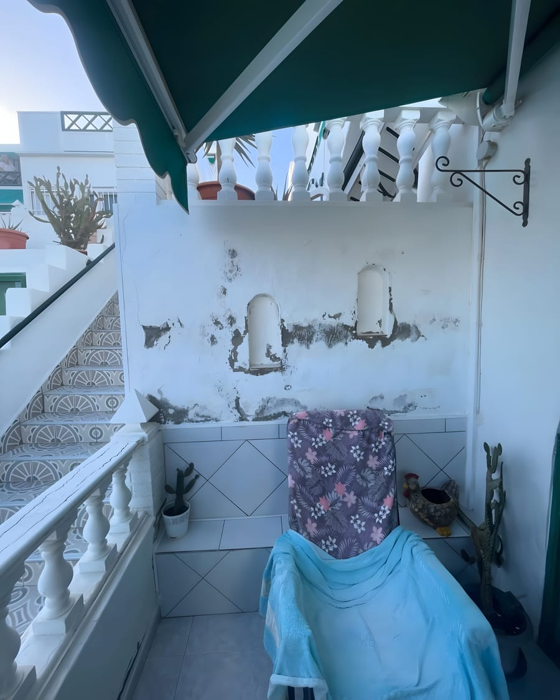
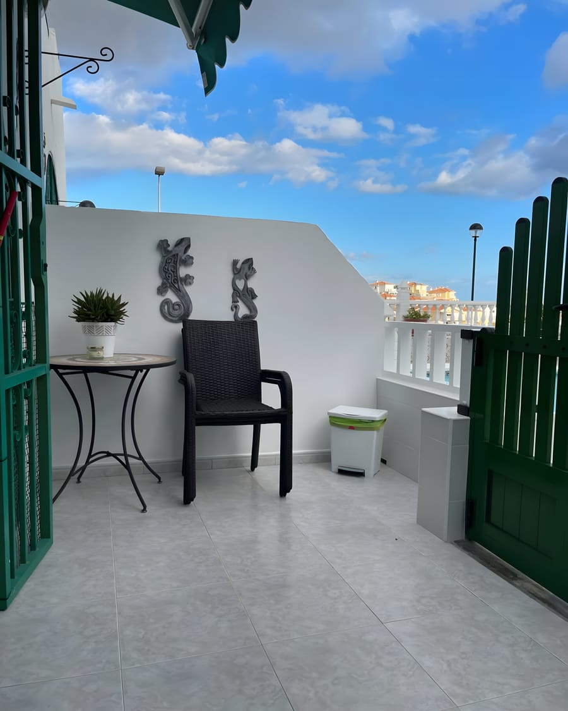
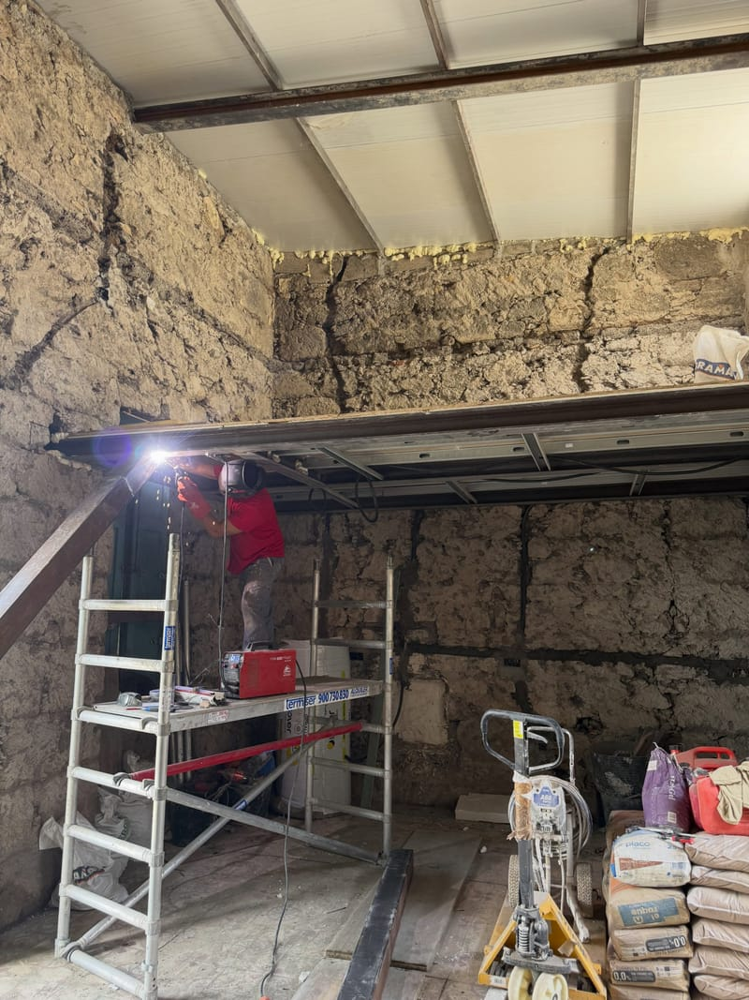
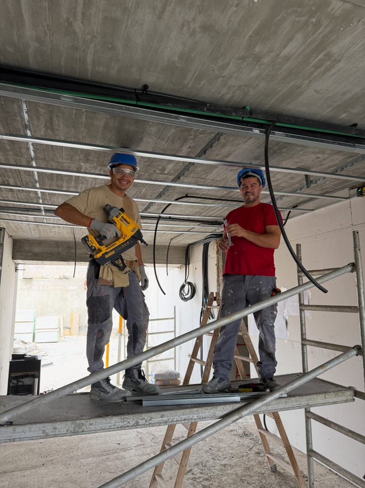
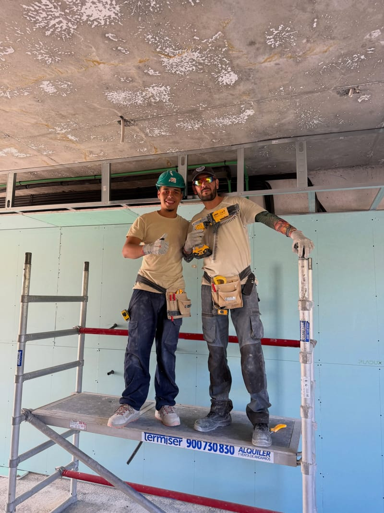
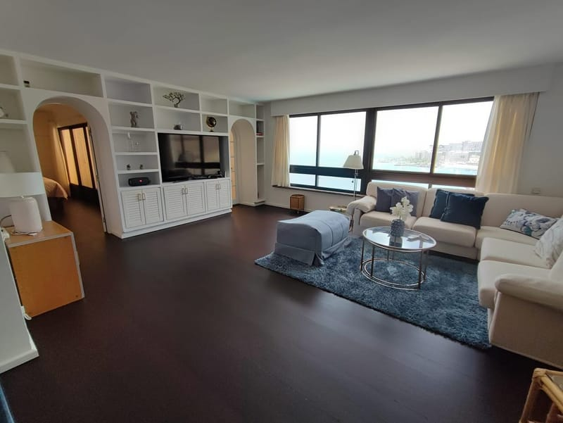
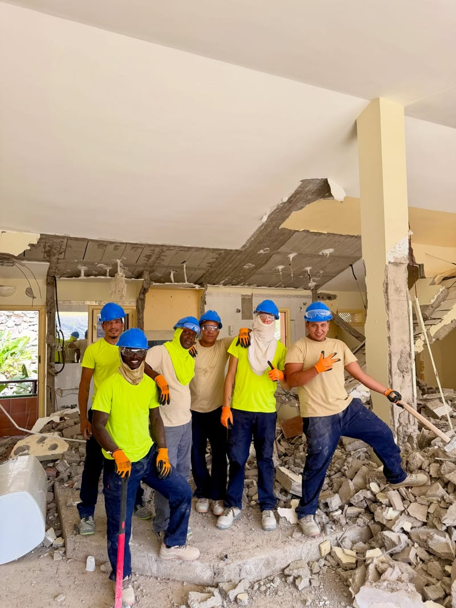

Oppussing med norsk standard på Gran Canaria
Over 8 år i faget. Vi lærte det ved å pusse opp boliger i Oslo, Panama og USA; nå bygger vi på Gran Canaria, og vi snakker norsk, spansk og engelsk.

Vårt lokale
Nytt lokale på Gran Canaria
Vi legger siste hånd på oppussingen. Snart kan du stikke innom og fortelle oss om prosjektet ditt.

Før og etter
Ekte prosjekter, fotografert av oss. Dra i lamellene for å gå fra før til etter.


Nytt kjøkken
- Arguineguín
- 2026
For en norsk kunde: alt ble byttet ut.
- Rørlegger
- Elektrisk
- Fliser
- Skap og hvitevarer
- Sparkel og maling


Stue
- Arguineguín
- 2026
Kunden ville beholde noen møbler og få to sovesofaer til den store familien.
- Oppussing
- Maling
- Gulv


Totaloppussing av leilighet
- Oslo
- 2023
En hel leilighet, fra byggeplass til overlevering.
- Totaloppussing


Fasademaling
- Oslo
- 2021
Trekledning malt om i antrasitt.
- Utvendig maling


Terrasse
- Arguineguín
- 2024
Del av en totaloppussing av en leilighet for en norsk kunde.
- Mur
- Fliser
- Maling
Vi lærte faget i Norge
Vi startet i Oslo med maling og oppussing av boliger, og fortsatte i Lørenskog med nybygg, bad, kjøkken, gulv og fasader. I 2024 kom de første oppdragene på Gran Canaria, mange for norske kunder. I dag er vi AJÁ Construction Group, og vi jobber på samme måte: ryddig, rent og med hver fase synlig.
- 2021Oslo
ML Malerservice: maling og oppussing av boliger.
- 2023Lørenskog
Marin López Prosjekter: nybygg, bad, kjøkken, gulv og fasader.
- 2024Gran Canaria
De første oppdragene på øya: leiligheter, et hotell og boliger i Arguineguín.
- 2026Gran Canaria
AJÁ Construction Group S.L.
Ett lag for hele jobben
Totaloppussing eller en enkelt jobb. Dette er fagene våre.

Innvendig og utvendig, fjerning av vegger, kledning og byggavfall.

Generelt murarbeid, vegger, fasader og terrasser.

Vegger, tak og påforinger.

Bad, kjøkken, avløp og oppussing av basseng.

Elektriske anlegg og solenergi.

Rekkverk, konstruksjoner og smedarbeid.

Parkett, gulvbord, flislegging og restaurering av tregulv.

Sparkling av vegger, innvendig og utvendig maling, tapetsering.

Hagestell og vedlikehold av boliger.


Hver fase synlig

1Riving og forberedelse
Vi fjerner vegger, kledning og avfall, og gjør rommet klart.

2Konstruksjon og installasjoner
Gips, nye rør og ny elektrisk installasjon før veggene lukkes.

3Sparkling og overflater
Glatte vegger, maling, fliser og gulv.

4Ryddig overlevering
Vi rydder og vasker før vi gir deg nøklene tilbake.



Ingen byggeplass uten et lag
Erfarne fagfolk med samme måte å jobbe på: gjøre det skikkelig og ta vare på hver detalj.

Det er jeg kjempefornøyd med.
Elisabeth, norsk kunde på Gran Canaria (2024)
- «Jeg fant dere på Facebook.»
- «Dere var veldig blide og hyggelige, og gjorde det veldig ordentlig etterpå. Ryddig og pent.»
- «Det har jeg allerede gjort, og det kommer jeg til å gjøre.»
Prosjekter på Gran Canaria

Hotell sør på Gran Canaria
Restaurering av tredørene. 2024

Leiligheter ved sjøen
Restaurert flytende gulv og nytt rekkverk. 2024

Leilighetskompleks, Arguineguín
Oppussing av bassenget. 2025

Park sør på Gran Canaria
Riving. 2026


Følg oss på byggeplassen
På Instagram viser vi hver uke hvordan prosjektene våre går fremover. Her er de siste innleggene.
Se Instagram-en vår


Fortell oss om prosjektet
Svar på tre spørsmål, så åpner vi WhatsApp med meldingen ferdig skrevet. Skriv gjerne på norsk, spansk eller engelsk.